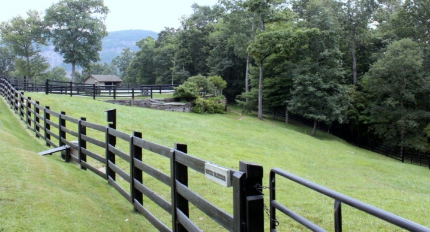
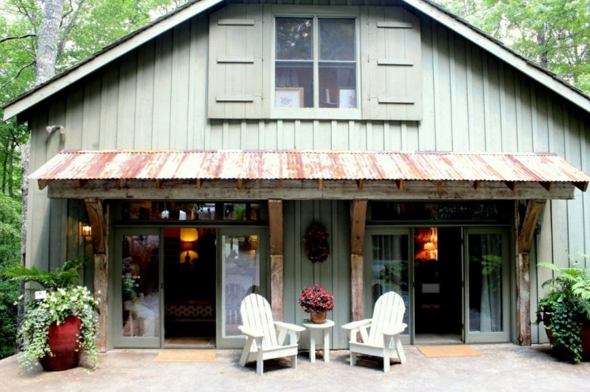
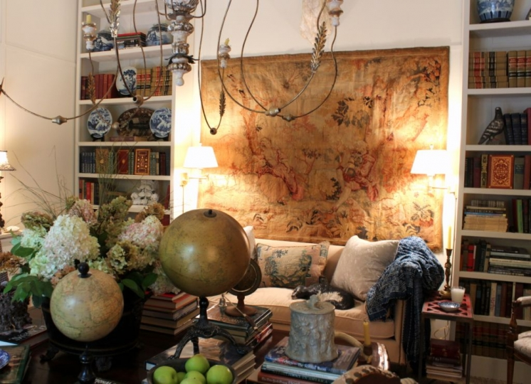

.png)
.PNG)
.PNG)
.PNG)
.PNG)
.PNG)
.JPG)
.JPG)
.PNG)
.PNG)


Welcome back! Â The last time we were together I began to tell you about the trip my husband planned for us to the Cashiers Designer Showhouse in the mountains of North Carolina. Â We looked at the main house of Serenity Acres in our last post, and as wonderful as that house was, I still loved the other two homes on the estate more. Â So today, let’s take a walk through this sweet little cottage…the bunk house.The volunteer who greeted us at the tour said that the bunk house was originally a barn, but the printed material said it was originally a garage. Â Whatever it was, the Bishop family (the original owners) decided to convert it into a bunk house for their grandchildren a few years ago. Â But I am sure you can tell from the photos here…this is not a little bunk house for grandchildren anymore!If you are facing the building like in the exterior shot above, this room is on the right. Â It was designed as a combination dining room and library by Charles Faudree (yes, THE Charles Faudree – the king of country French design. :)) Â That tapestry was HUGE. The space on the left side of the cottage was called the gathering room. Â It was done by Sally Johanneson. She used the family’s strong interest in horses as the springboard for her choice in accessories.
The space on the left side of the cottage was called the gathering room. Â It was done by Sally Johanneson. She used the family’s strong interest in horses as the springboard for her choice in accessories. Behind the dining room/library was an absolutely amazing bedroom (which is why there are so many photos of it here!) Â This space was designed by the always talented Kathryn Greeley. Â The canopied bed hangings were gorgeous, and I really liked the mix of patterns on it.Â
Behind the dining room/library was an absolutely amazing bedroom (which is why there are so many photos of it here!)  This space was designed by the always talented Kathryn Greeley.  The canopied bed hangings were gorgeous, and I really liked the mix of patterns on it. 

With the upholstered headboard, it really gave the room a cozy feel. Leather chairs in the corner made for another snug little area.
Leather chairs in the corner made for another snug little area. And oh my goodness – that ottoman. Â Did you notice it??
And oh my goodness – that ottoman. Â Did you notice it?? Look again…it’s upholstered in a faux bois fabric! Â How clever.
Look again…it’s upholstered in a faux bois fabric! Â How clever. Another vignette in the bedroom.
Another vignette in the bedroom.
****update: Â Susan (one of you super sweet readers) said in her comment that Kathryn Greeley has blog posts on how she did this room. Â Click here for post #5 in her series. Â Then you can follow the other posts before it from there. Â Thank you Susan!!
Okay…back to the tour now. There was a chocolate brown powder room by Jena Salmon right outside the bedroom door.
Tucked under the eaves upstairs was the official “bunk room” designed by Skip Ryan, but remember..this is not the bunk room for the grandchildren anymore. Â It had a bench and stacks of books….
a wonderful old work table on wheels…
and two full/double beds.

After touring the interior of the bunk house, the volunteer said “Be sure you check out the sleeping area.” Â I thought that was a little strange considering I had just looked at the bedroom. Â What he should have said was, “Be sure you check out the sleeping porch.” Â When I rounded the corner leaving the bunk house, this is what I saw on the side of the cottage…
What a fantastic surprise of a space! Â Porch girl here fell in love with that bed.

And here is the view of the other end of that fantastic porch done by Lynn Monday. (Just take away the animal skins, and I could live happily ever after there.)
I was going to try to finish the tour of both the bunk house and the guest house in this post, but these particular houses have many many photos.  So we will wait to do the guest house (my favorite) in our next post.  Meanwhile, here is a sneak peak of that upcoming guest house. Yes, the porch with all the drapes is different from the sleeping porch in the bunk house. I was certainly in porch heaven on this tour. 🙂

 I am leaving you with a question to talk about today….
Did you like the rooms in the bunk house? Â If so, what was your favorite?
Looking forward to hearing from you!
p.s. Â I have not forgotten about telling you where we stayed on this trip. Â That post is coming…soon…right after one more on the showhouse tour. It was an amazing place too!


.PNG)
I’ m moving to Charlotte, NC and hope I can visit. Charles Faundree is the King of French Country. Everyone did a beautiful job!!
Linda Simons
Interior designer ASID
Hi Kelly…
I just discovered your blog and it’s beautiful! I love your home and what you’ve done. Thank you for allowing us to peek inside!
———————————————————————
Thank you Holly, and welcome! I am so glad you discovered the blog, and thank you for taking the time to leave your sweet comment here.
Have a happy Friday!
Kelly
My favorite area was the upstairs under the eaves with all those books, pottery and art. I could spend hours up there reading and especially if it was rainey, cool and windy with autumn leaves falling! Oh my– how heavenly! Love NC and the Mts!
———————————————————————
Oh my goodness your description is making me want autumn to get here quickly, Louvina! (Especially after my car said it was 100 degrees when I got in it this afternoon. 🙠) That upstairs room was charming, and reading on a cold and dreary afternoon would be so nice up there…with a cup of hot spiced tea!
Kelly
Hi Kelly –
I too enjoyed the sleeping porch best. The bed was beautiful, and the curtains blowing in the breeze – so lovely!
Thanks to Susan for pointing out the posts by Kathryn Greeley. I love how she describes her style as collecting, not decorating. I love a look that has evolved over the years.
Megan
————————————————————————-
Maybe all of us need to add a sleeping porch to our house! LOL I appreciate Susan, too for alerting us to Kathryn Greeley’s posts on that wonderful bedroom. It was fun to read all about it.
Kelly
My favorite room in the bunk house was the sleeping porch. It is the perfect space. I love that cute doggie statue! I could curl up any where on that porch, with my dogs and read for hours! I love the space, bed and colors!
———————————————————————-
Not only was that room beautiful to me, too, but it was also SUCH a surprise. You think you are finished seeing all there is of that little house, and you are walking to the next one, when boom! You are just in awe of it being there. My mouth literally dropped open when I saw it. Oh yes, curling up with a book there would be great!
Kelly
Kelly,
The Charles Faudree room didn’t disappoint but I loved the Kathryn Greeley bedroom as well. Overall, I think I’d be most comfortable in the bunk house over the main house. I do love smaller spaces. Years ago I used to take the annual L.A. Philharmonic home tour. The houses were always more estates than houses and it was the carriage house in each that appealed to me. The porch on the bunk house was great…do they have to move everything indoors during the winter months?
I’m headed over to the link to how Kathryn Greeley designed the bedroom! This is a great series, thank you for taking us along.
Karen
———————————————————————-
Yay Karen! I am glad you liked that room by Charles Faudree. Like you, I would take a carriage house over a McMansion (just so much more cozy.)I am sure all of the furnishing will be taken down and used elsewhere when this is over. The estate is currently for sale. I remember seeing the drapes from the Atlanta symphony showhouse hanging in James Farmers’ shop when I was in there (along with several pieces he had used in other showhouses.) I have been in a couple of inns in that area during the winter, and their porches are still fully furnished – but there are many homeowners in that area who leave and go to their “Florida house” for winter. They do move everything inside while they are gone for the season.
Kelly
So pretty! One thing that really caught my eye were the beautiful planters outside of the bunk house and sleeping porch….so pretty! I also want to tell you that I like your new fall header with the apples and small chalkboard name tags! But you know what I like best….the fact that your husband enjoys and appreciates architecture and design and that you two enjoy doing these things together!!!!
———————————————————————-
The grounds were gorgeous, and if I had taken more photos I could do an entire post on just the landscaping. It is a showhouse for GARDEN designers too. If we go next year, I will be sure to get more pictures of that. There were some HUGE planters outside the main house, and as you approached the bunk house there was a wood shed with several interesting container gardens there. Thank you for the compliment on the new header! And oh yes, my husband is great about looking and getting ideas too. In fact, our first common interest when we were dating was the homes of Williamsburg, Virginia.
Kelly
I loved the gathering room…all those shelves of books!! We have a small piece of property in north Georgia and my husband would like to build a little house there for vacation. I have been resistant but after seeing the bunk house, i might rethink it.
———————————————————————-
Why in the world would you resist a little cabin in the mountains??! It would be a great place for relaxing AND it would give you another place to spread your decorating talents! 🙂 I would LOVE to have a cabin (if we could find the time to go there.)
Kelly
I have got to remember to go to this next year.
———————————————————————-
You would love it Kim, and it wouldn’t take you 4 hours to get there! Go ahead and mark it on your calendar. It runs from mid-August through Labor Day weekend. 🙂
Kelly
I love the bunkhouse and thanks for all the photos. Kathryn Greeley is amazing! You can go to her blog and read how she designed the bedroom. She actually commissioned artists and had pieces designed for the room. She tells exactly how she did it which is fun to read. Of course, it is her talent that steers the project! I am really enjoying this! Thanks so much for sharing your trip with us.
———————————————————————
Thank YOU for the info on Kathryn Greeley’s post! I added the link to the last of her series to my post. I know everyone will enjoy reading about her process and seeing more photos of that beautiful room.
Thanks again!
Kelly
wow !!! I would take any or all of these amazing spaces…love it all !!!!
———————————————————————-
I thought the bunk house was very well done. That porch was just the icing on the cake! Glad you liked it Linda.
Kelly
Hi Kelly, I’m not sure if it would be my favorite room, but I’d love to see more of that Charles Faudree room. How exciting that you have seen his work in person. Thanks for sharing your trip with us.
———————————————————————-
I wish I had more photos of that room Anne. It was very crowded in there, and I was trying hard to not have a whole bunch of people in the picture. I think, but I am not positive, that Atlanta Homes and Lifestyle Magazine will do a feature on the tour (if they haven’t already.) When they do, I am sure his room will be shown in better detail there. I’ll keep an eye out for it and let you know if I see it.
Kelly
Hi Kelly. Love the sleeping porch…from the beautiful bed, to the chairs and the flowing white curtains. I agree about the animal skins, but love everything else. Looks like you had a great trip.
Kristi
———————————————————————-
Wasn’t that a wonderful porch, Kristi?! A room like that is possible there with their cooler temperatures and no insects like we have here. Even with screens here, the heat would get us. But we can always dream! (or use it seasonally. :))
Kelly